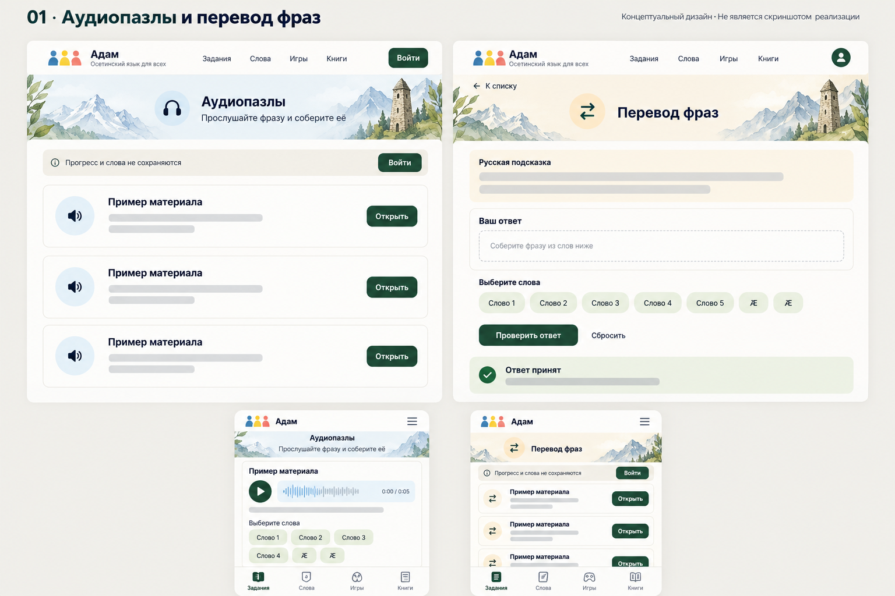
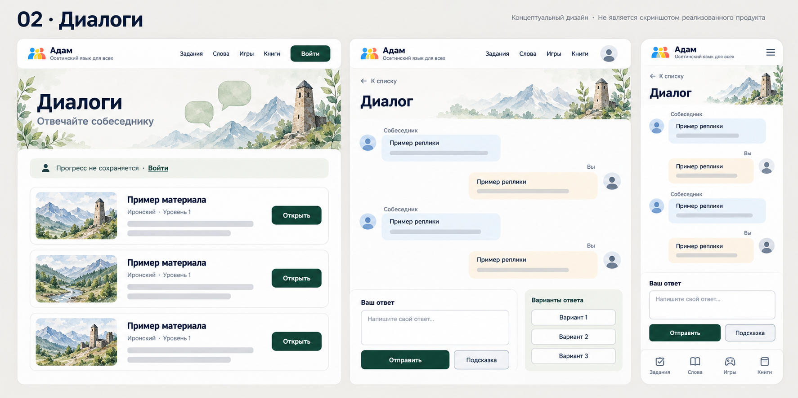
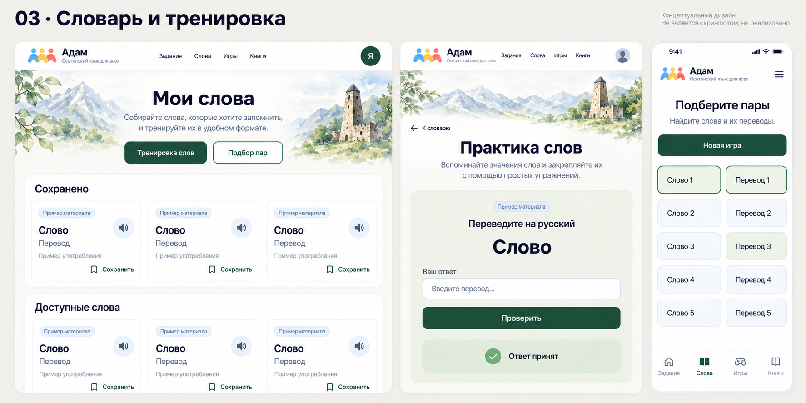
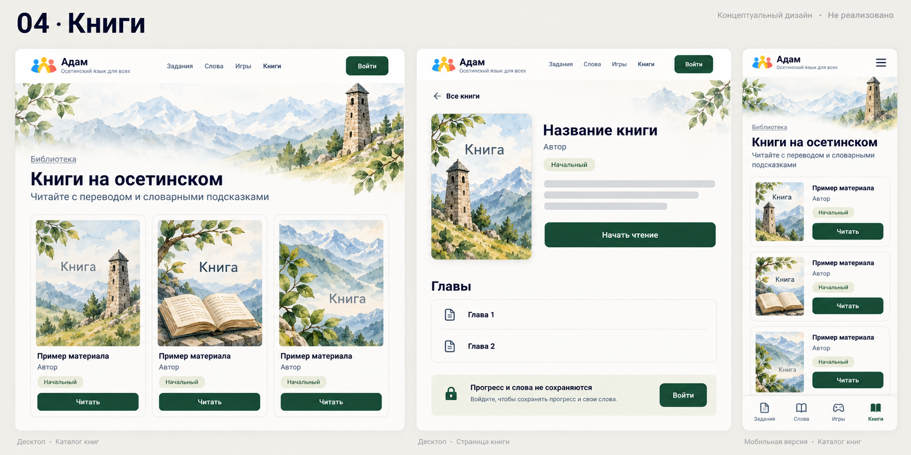
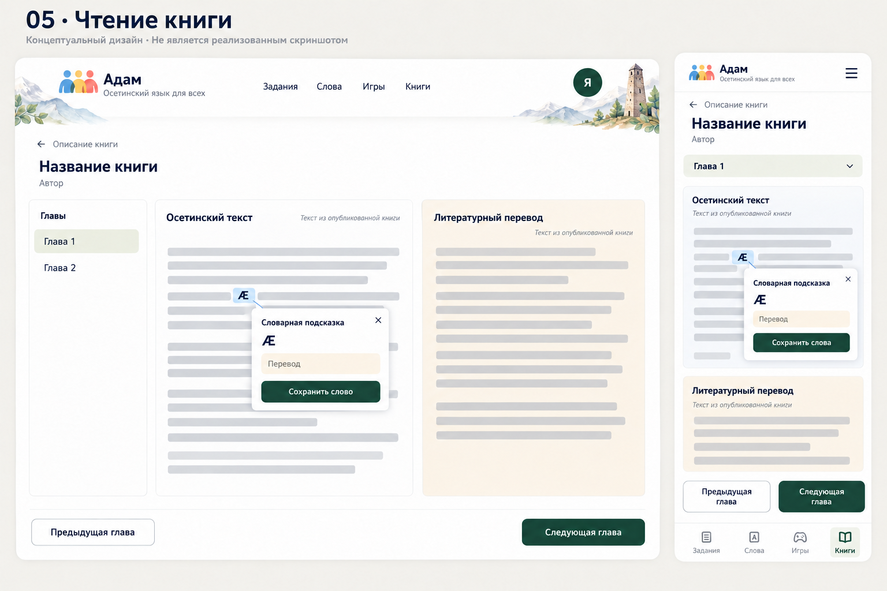
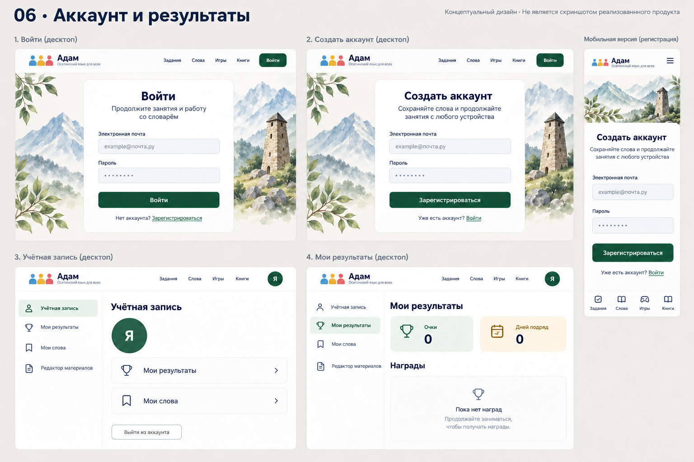
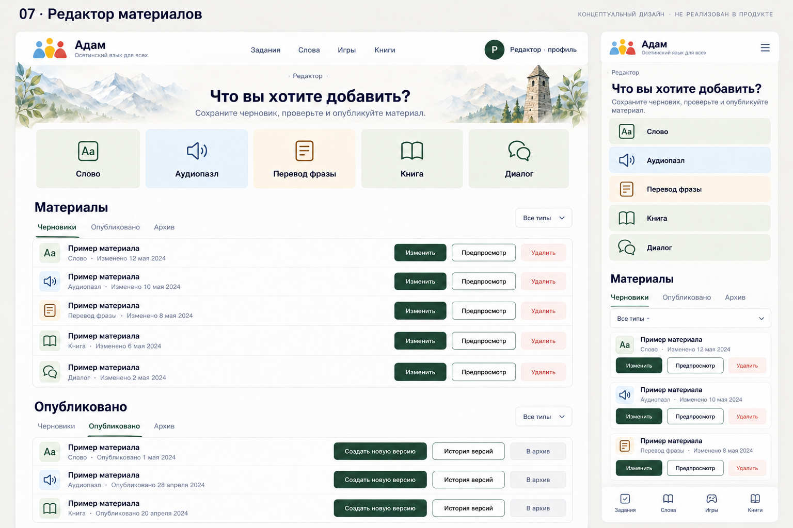
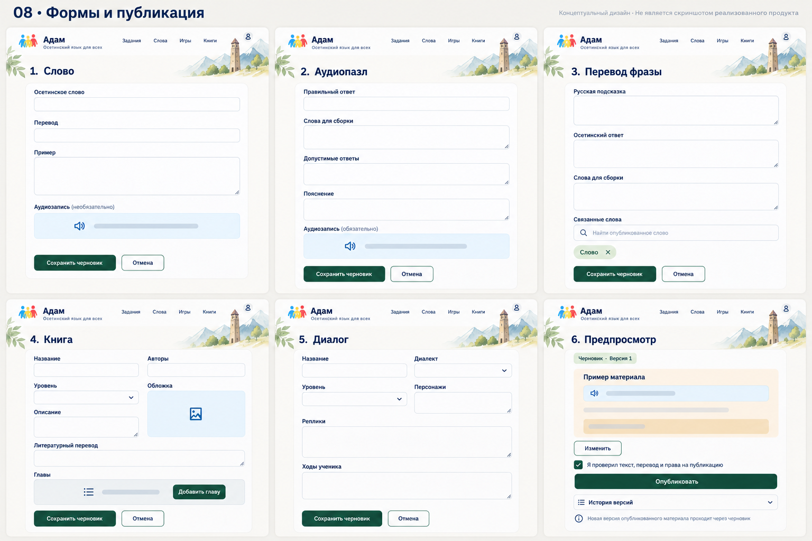
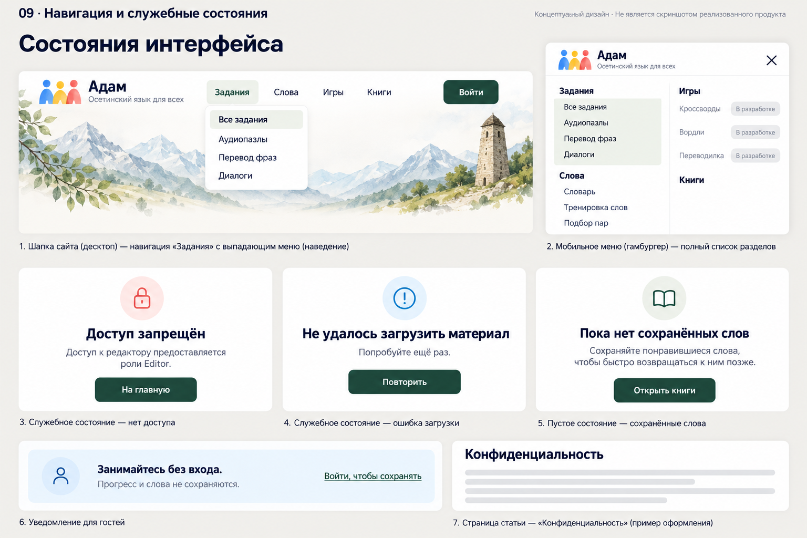

Девять листов в стиле главной страницы. Это изображения для обсуждения дизайна. Нажмите на лист, чтобы открыть его в полном размере.
В макетах используются заполнители учебного контента. Функции и права доступа при реализации сохраняются по текущему коду.
1. Аудиопазлы и перевод фраз
/audio-puzzles, /translate

2. Диалоги
/dialogs

3. Словарь, тренировка и подбор пар
/vocabulary, /word-practice, /game

4. Каталог и описание книги
/books

5. Чтение и словарная подсказка
/books: режим чтения

6. Вход, регистрация, профиль и результаты
/account/login, /account/register, /profile, /progress

7. Редактор: библиотека материалов
/editor

8. Редактор: формы и публикация
/editor: формы пяти типов, предпросмотр и история

9. Навигация и служебные состояния
Шапка, мобильное меню, гостевой режим, ошибки, /Home/Privacy
